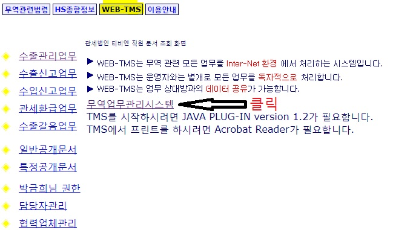
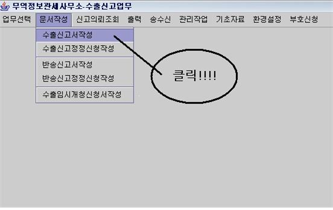
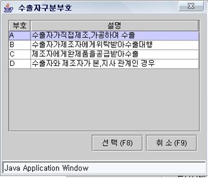
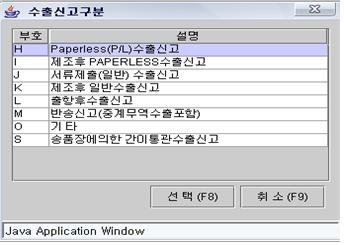
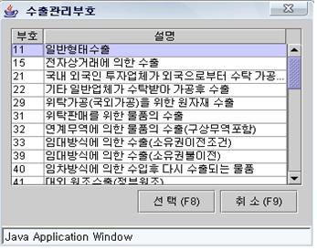

티비엔 메뉴얼 홈페이지입니다.
수출신고서 작성법
1. 통관프로그램 사이트접속(무역정보관세사무소) ->로그인 (id:myidhe pw:1234) -> WEB-TMS 클릭- 무역업무관리시스템 클릭 후 실행 (업데이트 물어볼경우 "나중에" 선택)

2. 업무선택 ->수출신고업무 -> 문서작성 -> 수출신고서 작성

3.신규작성(ex.연호전자)의 경우 입력 클릭하면 신고번호 자동생성, 불러오는경우(ex.세방전지) 수정 클릭후 신고번호 입력
4. 임시개청 : 'N' 입력한다.(-야간 또는 공휴일에 신고서를 전송하는 경우 임시개청 신청)
5. INVOICE NO, 관리번호 : INVOICE에 나와있는 인보이스번호 기재한다.
6. 신고일자 : 수출신고서 작성시 입력을 누르면 자동으로 입력된다.
7. 신고세관 : 두란이 있는데 첫란은 해당세관을 두 번째란은 과를 입력한다.
- 첫란(해당세관) -
ex) 광주세관일 경우에는 071, 광양세관일 경우에는 062를 선택한다.
- 두번째란(해당 과) -
해당하는 과부호를 선택한다.
8. 수출자구분

- 엔터를 쳐서 A,B,C,D 중 선택입력한다. 수출자가 제조자와 동일할 경우에는 A, 수출자가 수출대행만을 한 경우에는 B, 수출자가 완제품공급(원상태 공급을 포함한다)을 받아 수출한 경우에는 C, 수출자와 제조자가 본지사 관계인 경우에는 D를 입력한다.
-수출자와 제조자의 동일여부는 인보이스에 나온 shipper을 보면 알 수 있다. 예를 들어 세 방전지 같은 경우 shipper에 GLOBAL BATTERY CO LTD 라고 나와 있는데, 이경우에 는 세방전지가 직접제조 가공하여 수출하는 것이므로 A로 입력해 주면 되고 그 외에 퍼시 픽양행이나 세아스코 같은 기타 업체가 shipper에 나와있을 경우에는 c로 입력해주면된다.
-수출자 구분이 “A"인 경우 수출자를 입력하면 제조자가 자동입력된다.
-수출자 구분이 “B"인 경우 수출자, 위탁자, 제조자를 입력해야한다.
-수출자 구분이 “C"인 경우 수출자와 제조자를 입력해야한다.
-수출자 구분이 “D"인 경우 수출자와 제조자를 입력해야 한다.
9.수출자상호 : 수출자 상호 일부분이나 전체를 입력후 엔터키를 눌러 해당하는 상호를 선택하면 정보가 자동입력된다. 여기서 수출자와 제조자가 동일할 경우에는 제조자상호까지 자동적으로 입력된다.
10. 제조자상호 : 수출자와 제조자가 동일할 경우에는 자동입력이 되지만 수출자와 제조자 가 다를경우에는 제조자상호의 일부분이나 전체를 입력후 엔터 친후 해당하는 상호를 선택클릭한다.
12.구매자상호
-INVOICE에 명시된 외국의 구매회사 이름을 영문으로 입력한다.
-두란이 있는데 뒷란에 상호명 일부를 입력후 엔터를 치고 해당하는 상호와 주소를 선택 입력하면 자동적으로 그에 해당하는 구매자부호가 앞란에 자동으로 뜬다.
13.신고구분 : 수출자 입력시 자동 입력되지만,
때에따라서는 엔터친후 해당하는 신고구분 선택입력한다.

14. 거래구분 : 수출자 입력시 자동 입력되지만, 일반형태의수출이 아닌경우에는
엔터를친후 선택입력해준다.

14. 종류 : 수출자 입력시 “A"로 자동 입력된다.
15. 결제방법 : 엔터를 쳐서 L/C등 결제 방법 중 선택 입력한다.
연호의경우 대부분 "TT" /무상거래 or 샘플일경우 “GN"
세방전지의 경우 서류 확인해서 맞게 입력 (OA 인경우 DA, LC SIGHT = LS , LC USANCE = LU )
16. 물품소재지 : 연호 - 연호엠에스(62415) : 광주 광산구 평동산단3번로 61(용동)
세방전지 - 광양작업인 경우 전남 광양시 항만7로 13(도이동)
부산작업인 경우 부산 사하구 감천항로 291번길
17. 총중량 & 포장갯수 기입 후 엔터치기
18. 결제금액 : 단위 기입 후 결제금액 기재
ex) 단위: DDU,CFR,CIF 등...
19. 해상운임 : (연호) 결제금액 X 1100을 한 금액
최저 5
십만대 10
백만대 50
천만대 80
1억 100~150
3억 200~
세방전지 : EACH 인보이스에 운임 기재되어있거나 기재되어있지않으면 컨테이너 수량에 따라
임의로 계산 ( 유럽 1200USD 중동 700USD 아시아 300USD 그외 1200 USD , 2대이상인 경우 대수만큼 곱한 후 0.6(60%) 곱한금액으로 기입)
20. 보험료 : 결제금액 X 0.03% 한금액에서 소수점이하 절삭한 금액 (MIN 10)
ex) 결제금액 X 0.03% = 13.5234 인경우 13으로 입력. 8.233 인경우 최소금액 10
 21. 출하 선적정보 - 목적국, 적재항, 운송형태, 운송용기, 부호 입력
* 적재항 -> ICN(인천공항) or INC(인천항) or PU(부산항)
* 운송형태 -> 40 (항공기) or 10 (배)
* 운송용기 -> ETC (항공기) or LC (배)
* 부호 -> ICN(인천공항) : 040-99999
INC(인천항) : 020-99999
PU(부산항) : 030-99999
21. 출하 선적정보 - 목적국, 적재항, 운송형태, 운송용기, 부호 입력
* 적재항 -> ICN(인천공항) or INC(인천항) or PU(부산항)
* 운송형태 -> 40 (항공기) or 10 (배)
* 운송용기 -> ETC (항공기) or LC (배)
* 부호 -> ICN(인천공항) : 040-99999
INC(인천항) : 020-99999
PU(부산항) : 030-99999
 22. 란사항에 들어온후 엔터쳐서 품명란으로 넘어간다.
23. 품명 : 당해 물품을 나타내는 관세율표상의 품명을 영문으로 입력한다.
24. 거래품명 : 당해 물품을 나타내는 관세율표상의 품명을 영문으로 입력한다.
25. 상표명 : "NO" or 기재된 상표명을 입력.
* 원산지발급대상 협정코드
연호
-> KR / B / Y / N OR Y ( 중국 –112/ 인도-105, 베트남- 113)
세방전지
->자동입력 ( 결제방법에 한-EU, 한-영, 한-중미 등 적힌경우 N->Y 입력후 협정코드 맞게 입력
* 품명에 맞는 세번부호 기입 (세방전지=자동입력)
* 순중량 & 수량 & 포장갯수(단위) 기입 (세방전지=자동입력)
-> 엔터 3번 치기 -> 란 추가 할 사항 있는경우 "예" 그 외 “아니오” ->란 추가시 위의 방법 대로 차례대로 입력 -> 입력완료후 닫기 클릭 후 저장 클릭
22. 란사항에 들어온후 엔터쳐서 품명란으로 넘어간다.
23. 품명 : 당해 물품을 나타내는 관세율표상의 품명을 영문으로 입력한다.
24. 거래품명 : 당해 물품을 나타내는 관세율표상의 품명을 영문으로 입력한다.
25. 상표명 : "NO" or 기재된 상표명을 입력.
* 원산지발급대상 협정코드
연호
-> KR / B / Y / N OR Y ( 중국 –112/ 인도-105, 베트남- 113)
세방전지
->자동입력 ( 결제방법에 한-EU, 한-영, 한-중미 등 적힌경우 N->Y 입력후 협정코드 맞게 입력
* 품명에 맞는 세번부호 기입 (세방전지=자동입력)
* 순중량 & 수량 & 포장갯수(단위) 기입 (세방전지=자동입력)
-> 엔터 3번 치기 -> 란 추가 할 사항 있는경우 "예" 그 외 “아니오” ->란 추가시 위의 방법 대로 차례대로 입력 -> 입력완료후 닫기 클릭 후 저장 클릭
 26. 수출신고서 전송
신고서 입력 후 송수신->송신->수출신고서 송신 클릭
-클릭하면 아래와같은 화면이 뜨는데 해당하는 문서번호를 체크하여 송신한다.
26. 수출신고서 전송
신고서 입력 후 송수신->송신->수출신고서 송신 클릭
-클릭하면 아래와같은 화면이 뜨는데 해당하는 문서번호를 체크하여 송신한다.
 송신후 유니패스 처리현황에서 수리통보 됐는지 확인 후 수신받는다.(송수신->수신클릭)
연호의 경우 수리된 면장 폴더 저장 후 요청온 메일로 답장.
세방전지의경우 프로그램에서 관리작업 - 문서별 수출자료 다운로드 후 엑셀 전송.
(자세한 사항 - 업체별 메뉴얼 - 세방전지 확인)
송신후 유니패스 처리현황에서 수리통보 됐는지 확인 후 수신받는다.(송수신->수신클릭)
연호의 경우 수리된 면장 폴더 저장 후 요청온 메일로 답장.
세방전지의경우 프로그램에서 관리작업 - 문서별 수출자료 다운로드 후 엑셀 전송.
(자세한 사항 - 업체별 메뉴얼 - 세방전지 확인)